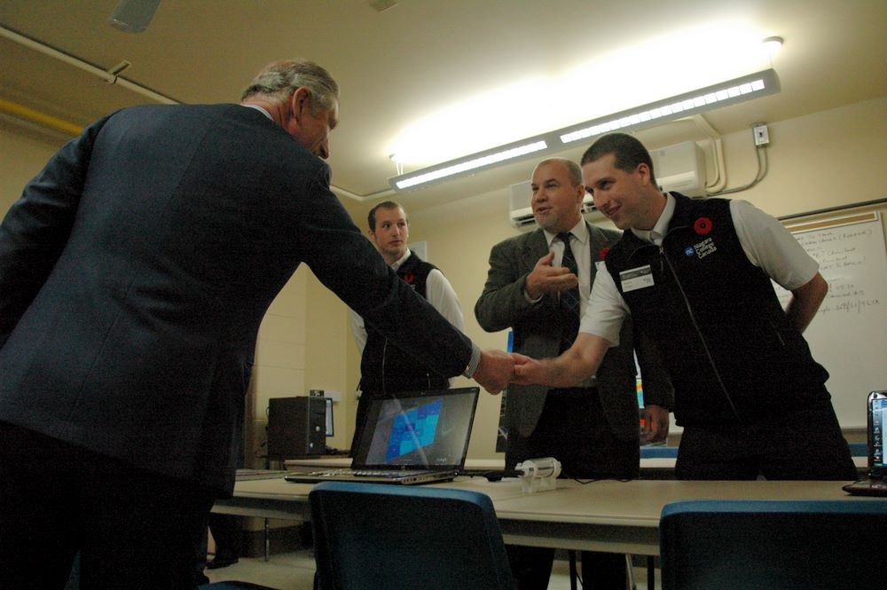

Developer Story
As a child, I spent my allowance on logic puzzle magazines from Dell & Penny Press. This was before sudoku succeeded it as the prominent deductive reasoning puzzle. I was one of those kids who liked reading about math, science, and technology. I'd get classmates to write coded messages in a substitution cipher so that I could solve them with frequency analysis. I was a bit of a nerd.
When we got our first family desktop computer, I was determined to figure out everything it could do. I would open every program installed (in Windows 3.1), look through every menu, every configuration dialog box, to learn its secrets. One day, at a local yard sale, I found a few books with titles like "Peter Norton's Assembly Language Book for the IBM PC" and "Tricks of the MS-DOS Masters". There was a picture of a wizard on the cover. I was hooked.
Before long, I was making simple COM files in Debug, the DOS hex editor (back then, a .COM was an executable file, not a website domain). From there, I started writing actual code in Batch and Basic.
My high school computer programming class introduced me to C++, where I would code up 3D tic tac toe algorithms, Matrix screen savers, and a sensor-guided navigation system for my teachers pet robot. By this time, I was also learning all about how to make a web page with HTML, CSS, and spinning wireframe crossbones animations (a necessity in the era of GeoCities and Angelfire).
After high school, I studied Computer Networking at Mohawk College, but dropped out after the first year, not sure of my direction at the time. I thought about audio engineering for a little while.
Eventually my love of programming won out, by this time mostly in C#/.NET with Niagara College's 3 year Computer Programmer/Analyst diploma program. One of my instructors recommended a placement at the college's research division (Niagara Research). working on projects in partnership with local businesses. That co-op turned into six years of working on things ranging from AutoCAD plugins to building a remote-sensing visualization and forecasting system for some of Niagara's vineyards called "PrAgMatic" (Precision Agriculture Automatic).
My time at Niagara Research was invaluable, not just architecting and building systems, but speaking about it at various trade shows, conventions, and conferences, even being highlighted in the school's publication, Encore. I also had the opportunity to make a presentation of the PrAgMatic project to Prince (now King) Charles III during his visit to our campus.

While still working at Niagara Research, I had in the meantime completed my diploma and moved on to getting my BSc in Computer Science at Brock University. This was much more high level and theory focused than the hands-on training from college, rounding out my skills and understanding.
After graduating from Brock, and a semester of teaching Object-Oriented Programming at Niagara College, I moved to Toronto to 'start' my career.
Since then, my professional experience has been predominately web-based enterprise systems, written in C# and JavaScript, across a number of industries. At MRI Software, I worked on a real-estate management platform. At Yangaroo, I helped build a digital media distribution service. At Method, I worked on enhancing the Customer Relationship Management system, and the no-code platform it was built upon.
During that time, I'd built up my skills not just in writing code, but also the various adjacent technologies, from maintaining databases to administrating virtual servers. Most importantly, I honed my understanding of the higher level concepts and abstractions that can make or break a software system over time.
After Covid, and a decade in Toronto, I started a self-funded sabbatical in 2023. Then the AI bubble came, and it became clear that there would be a renewed need for developers with an understanding of the software development philosophies most important in building long-lasting, high quality software...